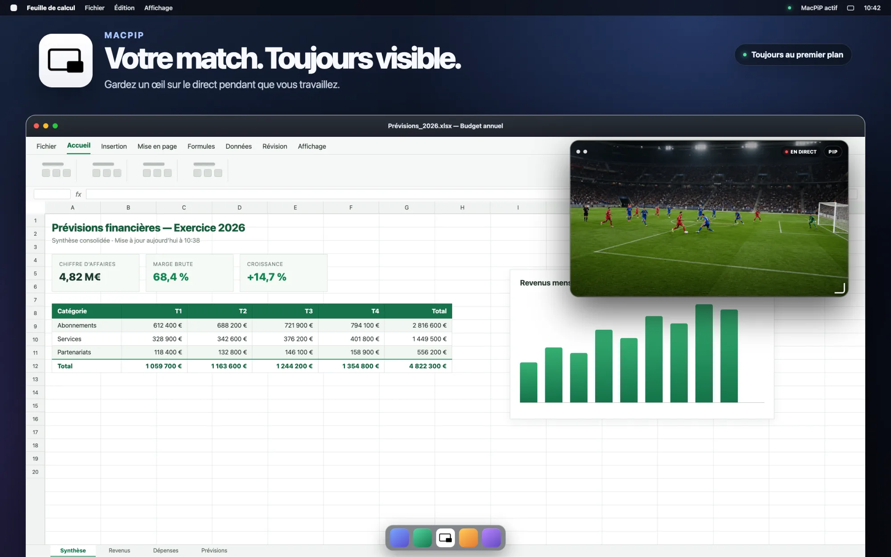
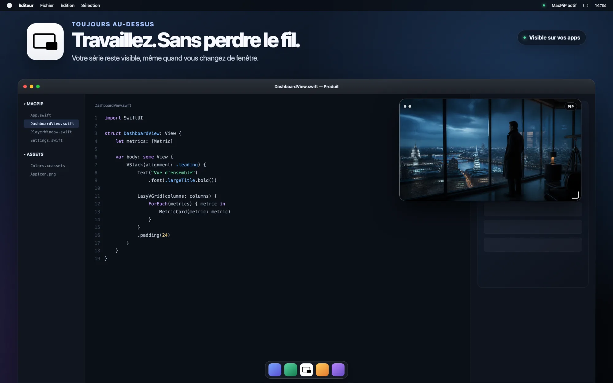
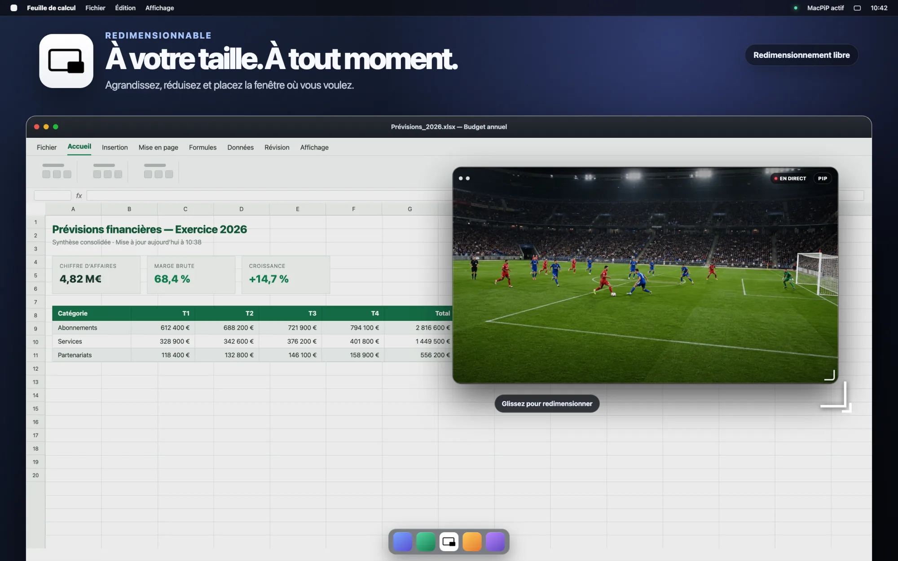
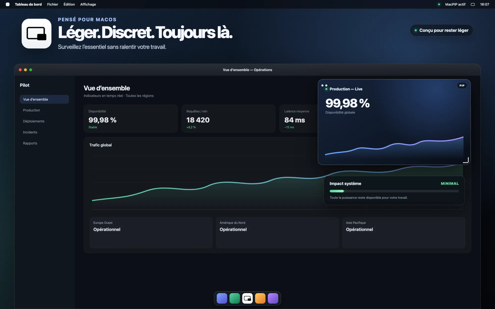

AnyPiP transforme n'importe quelle fenêtre de votre Mac en un mini-lecteur flottant qui reste toujours au premier plan, pendant que vous continuez à travailler ailleurs.
Une vidéo YouTube, un appel Zoom, un match en direct sur NetFlix, une vidéo de formation : clic droit sur la fenêtre AnyPiP, choisissez l'application à afficher, et c'est parti. La fenêtre se place où vous le souhaitez sur l'écran et se redimensionne selon votre envie.
AnyPiP turns any window on your Mac into a floating mini player that stays above everything else, while you keep working somewhere else.
A YouTube video, a Zoom call, a live match, a training clip: right-click the AnyPiP window, pick the app you want to watch, and that's it. Place the window anywhere on your screen and resize it however you like.

La fenêtre reste visible par-dessus vos autres applications.
The window stays visible above your other applications.


AnyPiP retrouve les fenêtres actives dans un autre Espace en plein écran (par exemple une app de streaming), là où d'autres outils échouent.
AnyPiP finds windows running in another full-screen Space — a streaming app, for instance — where other tools come up empty.
Aucune icône dans le Dock, aucune fenêtre superflue.
No Dock icon, no windows you didn't ask for.
Une seule fenêtre, une seule capture à la fois. Toute la puissance reste disponible pour votre travail.
One window, one capture at a time. The rest of the machine stays yours.

Écrivez-moi directement, je réponds personnellement à chaque message.
Write to me directly, I answer every message myself.
Téléchargez AnyPiP, autorisez l'enregistrement d'écran une seule fois, et faites un clic droit.
Download AnyPiP, grant screen recording once, then right-click.
AnyPiP ne collecte aucune donnée personnelle. L'application est sandboxée : les fenêtres capturées via ScreenCaptureKit s'affichent uniquement dans le lecteur flottant, sur votre Mac, et ne sont jamais enregistrées, envoyées ou partagées. Aucun compte, aucun tracker, aucune télémétrie.
Ce site utilise le stockage local de votre navigateur uniquement pour retenir votre choix de langue (FR/EN) — aucun cookie de suivi ni outil d'analyse.
Le formulaire de contact transmet votre nom, votre email et votre message par email à david@markowicz.fr, dans le seul but de vous répondre. Ces informations ne sont ni stockées dans une base de données, ni partagées avec des tiers.
Une question sur vos données ? Écrivez à david@markowicz.fr.
AnyPiP collects no personal data. The app is sandboxed: windows captured via ScreenCaptureKit are only ever displayed in the floating player, on your Mac, and are never recorded, sent, or shared. No account, no trackers, no telemetry.
This site uses your browser's local storage only to remember your language choice (FR/EN) — no tracking cookies, no analytics.
The contact form sends your name, email, and message by email to david@markowicz.fr for the sole purpose of replying to you. This information is never stored in a database or shared with third parties.
Questions about your data? Write to david@markowicz.fr.